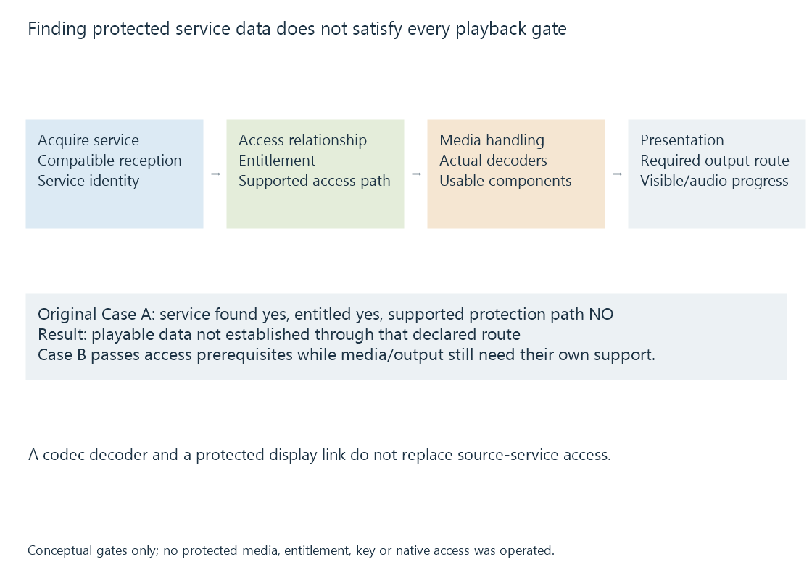

Encrypted TV channels and supported playback paths
An encrypted television service needs a supported acquisition, entitlement/protection and media path; recovering its broadcast data alone does not provide playable programme content.
A receiver can discover a television service and recover its transmitted data while the selected application still has no usable path to its protected content.
An encrypted channel adds an access/protection relationship to the acquisition and media-decoding route. These conditions should be evaluated separately.
The gates have different responsibilities
| Gate | Question |
|---|---|
| Reception/delivery | Can the source obtain the intended service data? |
| Entitlement | Is access available under the applicable service arrangement? |
| Implemented protection path | Can the actual source/software/client carry out the required supported operation? |
| Media decoding | Can the recovered video/audio representation be consumed? |
| Required presentation path | Does the later output meet the actual playback requirements? |
A scan can identify a name or service descriptor without passing all later gates.

Two original access cases
| Model case | Service found | Entitled | Supported protection path | Playable data established |
|---|---|---|---|---|
| A | Yes | Yes | No | No |
| B | Yes | Yes | Yes | Depends on the remaining media/output stages |
Case A explains why a valid subscription or device pairing is not by itself an application capability result.
Case B supplies that access prerequisite without proving every later decoder or presentation condition. These are invented diagnostic states, not claims about a provider or product.
Protection support can be an end-to-end arrangement
ATSC A/360 defines security/service-protection mechanisms within its scope. Cable conditional-access and product delivery arrangements have other defined contracts.
SiliconDust’s CableCARD documentation describes particular supported protected-channel playback paths. It does not declare that every ordinary network stream client supports them.
A service working in a manufacturer’s application therefore cannot automatically be used as evidence for a different generic server/client route. The actual protected representation and interface need their own support.
Encryption is not a video codec
HEVC, H.264 or another codec describes picture reconstruction from an appropriate encoded representation. Supporting that decoder does not establish the required protected-service access.
Likewise, HDCP concerns a protected display-link relationship. It is not a universal replacement for the earlier broadcast/service protection stage.
If reception succeeds but playable data is not exposed, a different client bitrate or video encoder does not solve the missing access path.
Clear reception is a distinct case
Clear QAM describes relevant unencrypted cable services. It should not be generalized into a promise about all services on the same cable network.
For Emby, the useful source result is the playable representation actually supplied by the supported interface. A channel-list entry, RF lock and account status describe different prerequisites before that result.
See Also
- Clear QAM cable television
- ATSC 3.0 broadcast television
- HDHomeRun network tuner routes
- DRM-protected media and authorized playback paths
- HDCP and protected display links